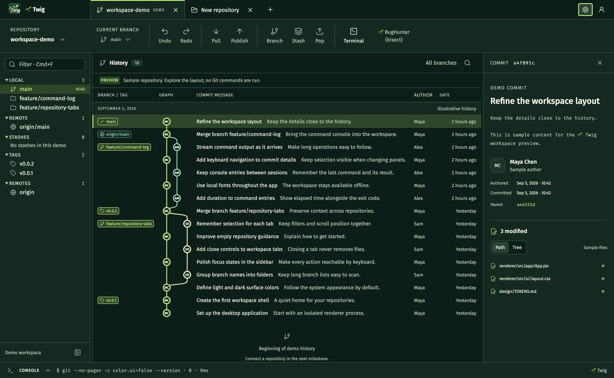

ВСЯ ИСТОРИЯ ПЕРЕД ГЛАЗАМИМеньше переключений. Больше контекста.

Рабочее пространство 🌱 Twig · демонстрационный репозиторий
01 Быстрый отклик02 Локальная работа03 Всё под контролем
СДЕЛАНО ДЛЯ ЕЖЕДНЕВНОЙ РАБОТЫ
Сложный Git. Простые движения.
От первого коммита до запутанной истории. Инструменты, ради которых хочется открыть клиент.
01 / ПОМНИТЬ ВАЖНОЕ
Ваши локальные марки
Отметьте стабильную версию, подозрительный коммит или идею на потом. Шесть цветов и заметки прямо в истории. Видны только вам, в общий репозиторий не попадают.
a4f891cПоследняя стабильная версия
Отсюда можно начинать релиз.
02 / ПРИВЕСТИ В ПОРЯДОК
Rebase, который видно
Перестраивайте историю: меняйте порядок коммитов перетаскиванием, объединяйте их и правьте сообщения. Весь план виден до запуска. При остановке — продолжить, пропустить или отменить.
⠿pickДобавить новую возможность
⠿fixupУбрать отладочный вывод
⠿rewordУточнить сообщение
03 / СОБРАТЬ ЛУЧШЕЕ
Конфликты без путаницы
Ваша версия, общая база, их изменения и редактируемый результат — рядом. Выбирайте отдельные строки с обеих сторон, задавайте порядок и отменяйте правки внутри редактора.
НашеБазаИх
↳ Ваш результат ✓
04 / СОХРАНИТЬ ТЕМП
Быстро. Даже в большой истории.
Граф рисует только видимые строки, а коммиты подгружаются по мере прокрутки. Вкладки помнят вашу позицию и выделение — возвращайтесь к работе с того же места.
100 000коммитов в проверке алгоритма раскладки графа
ЗНАКОМЬТЕСЬ, BUGHUNTER
«Вчера работало». Найдём, где сломалось.
Вы знаете версию без бага и версию с багом. BugHunter выбирает коммиты между ними, а вы проверяете результат: ошибка есть или нет.
В основе — git bisect, поиск делением диапазона пополам. Вместо ручного перебора истории — понятные шаги, оценка оставшихся проверок и коммит, с которого всё началось.
Иллюстрация для линейной истории с одной причиной бага. Если версию нельзя проверить, её можно пропустить — шагов может стать больше.
ПОЧЕМУ 🌱 Twig
Меньше рутины. Больше вашего кода.
↗
Действуйте прямо на графе
Перетащите ветку на ветку и выберите действие. 🌱 Twig покажет направление и точные команды перед запуском.
±
Собирайте точные коммиты
Добавляйте в коммит файлы, фрагменты или отдельные строки. Остальные изменения дождутся своей очереди.
>_
Видите, что происходит
Встроенная консоль показывает команды Git, их вывод и время выполнения. История действий остаётся под рукой.
✓
Проверяйте до отправки
Настройте тесты и проверки перед коммитом или push внутри 🌱 Twig. Результаты каждого шага видны в автоматизациях.
Ваш репозиторий остаётся вашим. Работа с локальным Git, без аккаунта 🌱 Twig и телеметрии. Интернет нужен для синхронизации и ваших команд, которые обращаются к сети.
ПОРА ОТРАСТИТЬ НОВУЮ ВЕТКУ
Место для вашего следующего коммита.
🌱 Twig {{version}}Предварительная версия
{{downloads}}
Для работы нужен установленный Git. На Mac: Apple Silicon — чипы серии M, Intel — процессоры Intel.
Что нужно знать перед установкой?
🌱 Twig активно развивается. Сборки пока без цифровой подписи и нотариального заверения Apple: macOS и Windows могут показать предупреждение при первом запуске. Разрешайте открытие только сборки, полученной из доверенного источника. Установка Git выполняется отдельно.